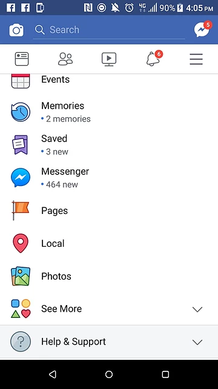
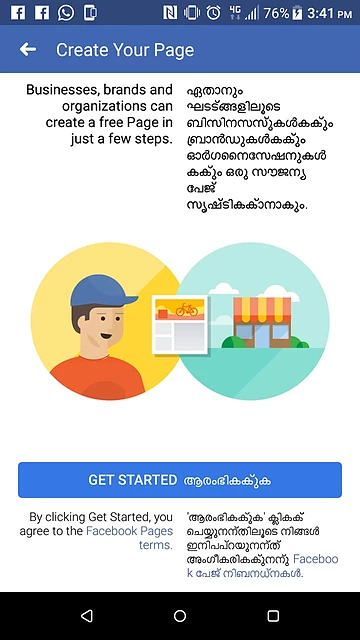
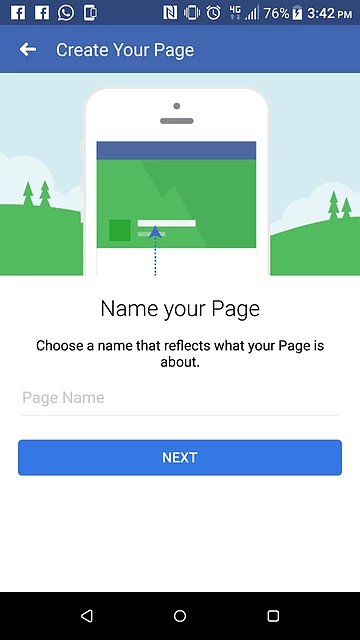
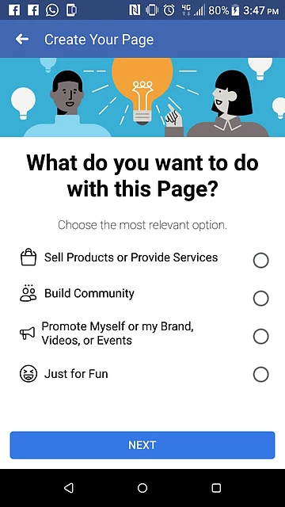
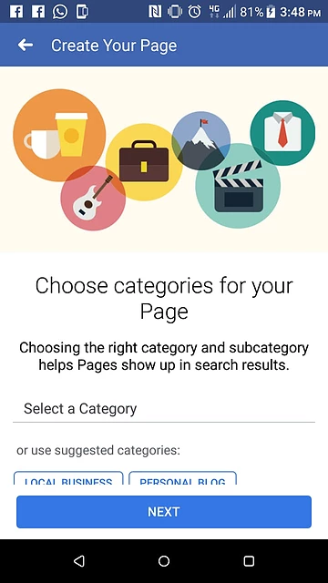
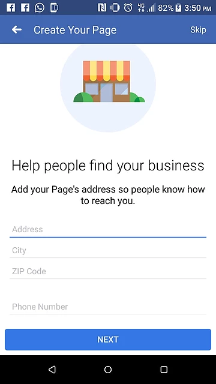
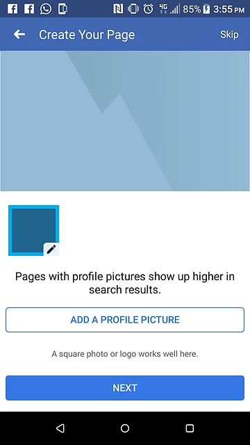

Everyone who has the dream of beginning their own business end up focus
too much on the planning but never begin.But we believe in starting so
let us show you how to begin the first step
Lets start with creating a simple business page on Facebook .
Let us begin
1)There are three lines at the corner of the Facebook App, below the
message icon click on the button
2)Select the pages menu.
3)Select create page button.
4)Select the name of your page( preferably the name of your business- if you don't get the choice you had in mind don't get dejected and quit there , or think ohh i will come later when i get a good name..... doing is whats important later you can change the name or brand the name you select)and click next
5)Choose what you want to do with the page, Facebook will automatically help u select a layout for your purpose.
6)Select category and a sub category and click next.
7) Add your address and phone number to let people know where to find you(If you don't have an office its ok to give your house address[ having address helps building trust] and later when you begin making money you can take an office. Remember beginning is whats important.
8) Add a Profile Picture(preferably a logo if you cant afford an artist use Canva and write your business name in a good font. its a beginning later you can hire a proper artist) and a cover Picture ( you can find copyright free images from Unsplash or hire an artist if you can afford one)

9)You have created your own page. Congrats
We will show you how to add important details in the page and setup a
free eCommerce website in the coming articles


 +91 77366 95526
+91 77366 95526
 info@blusteak.com
info@blusteak.com